Bildquellen und Lizenzen
Authentische Fotografien aus Wikimedia Commons. Prüfung: 20.–21.10.2026. Ortsangaben entsprechen der dokumentierten Genauigkeit.
Zur Ermittlungszentrale · Vollständige Dokumentation
F01 · Zebras und Gnus auf einer weiten Grasfläche der Maasai Mara.
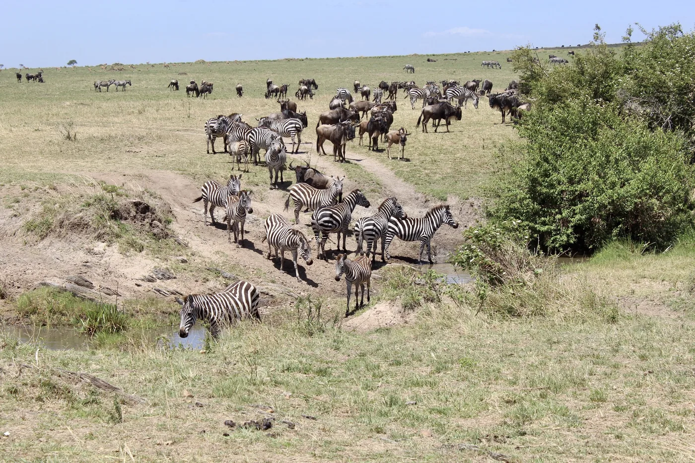
Ort: Maasai Mara, Narok County, Kenia
Aufnahmedatum laut Quelle: 2018-12-10
Autorbeschreibung nennt weidende Zebras und Gnus in der Maasai Mara, Kenia; die Kategorien bestätigen beide Tierarten und das Schutzgebiet.
Original: Zebras and wildebeest Maasai Mara.jpg · Geprüfte Beschreibungsrevision
Urheber: Michelle Juma · CC BY-SA 4.0
Attribution: Zebras and wildebeest Maasai Mara.jpg — Michelle Juma, CC BY-SA 4.0 (https://creativecommons.org/licenses/by-sa/4.0), via Wikimedia Commons (https://commons.wikimedia.org/wiki/File:Zebras_and_wildebeest_Maasai_Mara.jpg). Auf längstens 1400 Pixel verkleinert, nach WebP (Qualität 82) konvertiert; EXIF entfernt. Kein inhaltlicher Eingriff und kein gespeicherter Beschnitt.
Motivabweichung / Grenze: Keine Abweichung vom geplanten Motiv.
Lokaler Quellennachweis
F02 · Sanddünen mit Windrippeln in der Namib.
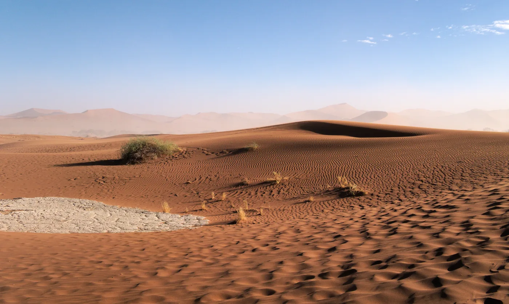
Ort: Zwischen Deadvlei und Sossusvlei, Namib-Naukluft-Nationalpark, Namibia
Aufnahmedatum laut Quelle: Taken on 21 May 2019, 09:13:09
Beschreibung und Aufnahmekoordinaten -24.751763, 15.292119 stimmen mit Sossusvlei überein.
Original: Sossusvlei Dune Rippled cropped.jpg · Geprüfte Beschreibungsrevision
Urheber: Daniel Kraft · CC BY-SA 3.0
Attribution: Sossusvlei Dune Rippled cropped.jpg — Daniel Kraft, CC BY-SA 3.0 (https://creativecommons.org/licenses/by-sa/3.0), via Wikimedia Commons (https://commons.wikimedia.org/wiki/File:Sossusvlei_Dune_Rippled_cropped.jpg). Auf längstens 1400 Pixel verkleinert, nach WebP (Qualität 82) konvertiert; EXIF entfernt. Kein inhaltlicher Eingriff und kein gespeicherter Beschnitt.
Motivabweichung / Grenze: Keine Abweichung vom geplanten Motiv.
Lokaler Quellennachweis
F03 · Geschlossene Baumkronen des tropischen Ituri-Regenwalds aus der Luft.
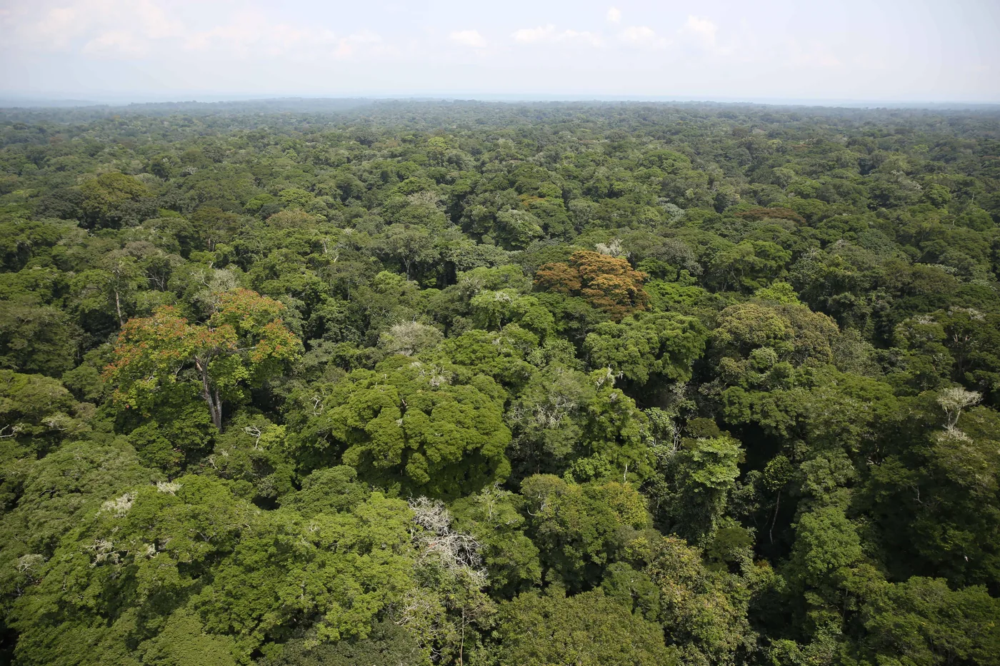
Ort: Ituri-Regenwald, Demokratische Republik Kongo, Kongobecken
Aufnahmedatum laut Quelle: 2015-08-22 09:53
MONUSCO-Aufnahme Rainforest – Ituri; Commons ordnet sie Ituri Province, Ituri rainforest und der DR Kongo zu. Keine punktgenauen Koordinaten angegeben.
Original: Rainforest - Ituri (20874628148).jpg · Geprüfte Beschreibungsrevision
Urheber: MONUSCO / Abel Kavanagh · CC BY-SA 2.0
Attribution: Rainforest - Ituri (20874628148).jpg — MONUSCO / Abel Kavanagh, CC BY-SA 2.0 (https://creativecommons.org/licenses/by-sa/2.0), via Wikimedia Commons (https://commons.wikimedia.org/wiki/File:Rainforest_-_Ituri_(20874628148).jpg). Auf längstens 1400 Pixel verkleinert, nach WebP (Qualität 82) konvertiert; EXIF entfernt. Kein inhaltlicher Eingriff und kein gespeicherter Beschnitt.
Motivabweichung / Grenze: Luftaufnahme des Kronendachs statt Aufnahme vom Waldboden.
Lokaler Quellennachweis
F04 · Hochhäuser und dichte Bebauung auf Lagos Island.
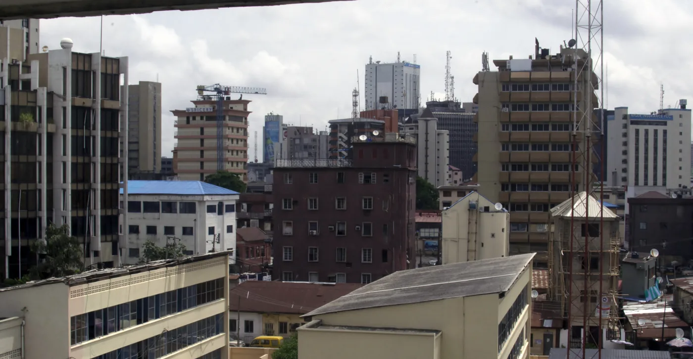
Ort: Blick vom City Hall, Lagos Island, Lagos, Nigeria
Aufnahmedatum laut Quelle: 2016-05-27 01:33:44
Autorbeschreibung nennt den Blick vom City-Hall-Gebäude auf Lagos Island; Kategorie Lagos Island bestätigt die Zuordnung.
Original: Lagos Island City Scape.jpg · Geprüfte Beschreibungsrevision
Urheber: Jamie Tubers · CC BY-SA 4.0
Attribution: Lagos Island City Scape.jpg — Jamie Tubers, CC BY-SA 4.0 (https://creativecommons.org/licenses/by-sa/4.0), via Wikimedia Commons (https://commons.wikimedia.org/wiki/File:Lagos_Island_City_Scape.jpg). Auf längstens 1400 Pixel verkleinert, nach WebP (Qualität 82) konvertiert; EXIF entfernt. Kein inhaltlicher Eingriff und kein gespeicherter Beschnitt.
Motivabweichung / Grenze: Bestandsbebauung und Hochhäuser von 2016 statt einer aktuellen Aufnahme von Eko Atlantic.
Lokaler Quellennachweis
F05 · Menschen bei der landwirtschaftlichen Arbeit auf einer Demonstrationsfarm.
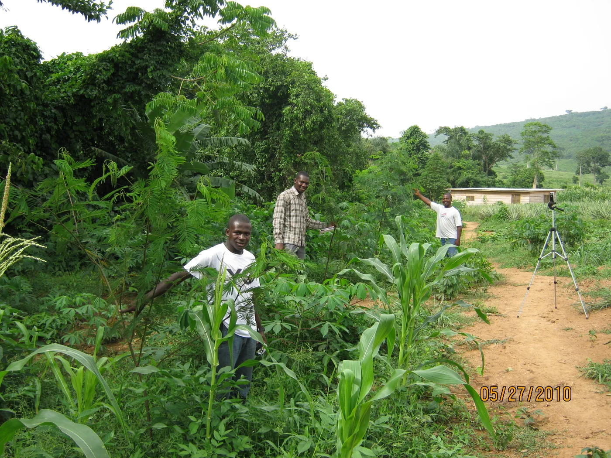
Ort: Darsfield-Demonstrationsfarm, Ghana
Aufnahmedatum laut Quelle: 2010-05-27
Beschreibung benennt die Darsfield-Earthcare-Demonstrationsfarm; Kategorien Agriculture in Ghana und Farmers from Ghana bestätigen das Land. Genauer Ort innerhalb Ghanas nicht belegt.
Original: Darsfield farm Ghana 2010 - 001.jpg · Geprüfte Beschreibungsrevision
Urheber: Trees For The Future (TFTF) · CC BY 2.0
Attribution: Darsfield farm Ghana 2010 - 001.jpg — Trees For The Future (TFTF), CC BY 2.0 (https://creativecommons.org/licenses/by/2.0), via Wikimedia Commons (https://commons.wikimedia.org/wiki/File:Darsfield_farm_Ghana_2010_-_001.jpg). Auf längstens 1400 Pixel verkleinert, nach WebP (Qualität 82) konvertiert; EXIF entfernt. Kein inhaltlicher Eingriff und kein gespeicherter Beschnitt.
Motivabweichung / Grenze: Keine Abweichung vom geplanten Motiv.
Lokaler Quellennachweis
F06 · Schneebedeckte Hänge im Hohen Atlas.
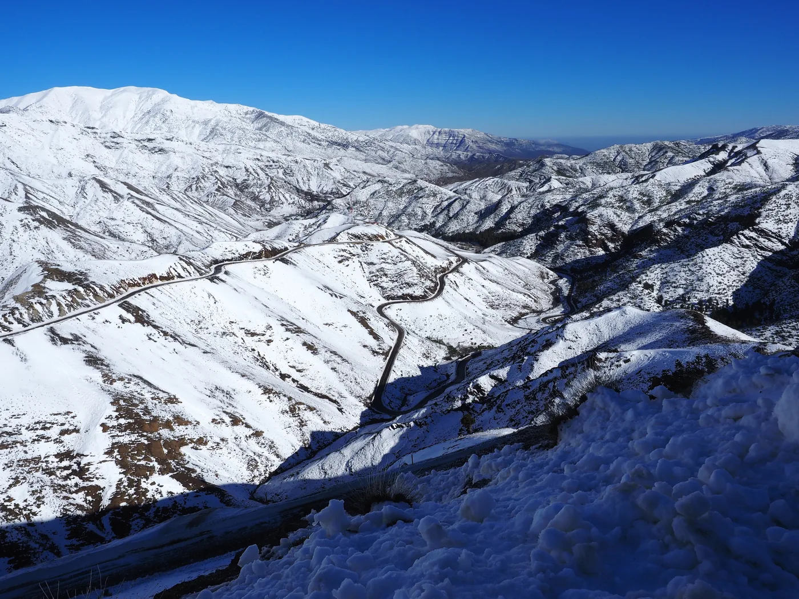
Ort: Hoher Atlas, Marokko
Aufnahmedatum laut Quelle: 2015-03-26 09:42
Autorbeschreibung und auf Commons dokumentierte Flickr-Koordinaten belegen den Hohen Atlas in Marokko.
Original: Extreme Environment - Snow in the Atlas Mountains, Morocco (17182710966).jpg · Geprüfte Beschreibungsrevision
Urheber: Richard Allaway · CC BY 2.0
Attribution: Extreme Environment - Snow in the Atlas Mountains, Morocco (17182710966).jpg — Richard Allaway, CC BY 2.0 (https://creativecommons.org/licenses/by/2.0), via Wikimedia Commons (https://commons.wikimedia.org/wiki/File:Extreme_Environment_-_Snow_in_the_Atlas_Mountains,_Morocco_(17182710966).jpg). Auf längstens 1400 Pixel verkleinert, nach WebP (Qualität 82) konvertiert; EXIF entfernt. Kein inhaltlicher Eingriff und kein gespeicherter Beschnitt.
Motivabweichung / Grenze: Keine Abweichung vom geplanten Motiv.
Lokaler Quellennachweis
F07 · Sandstrand, Palmen und Meer an der Ostküste Sansibars.
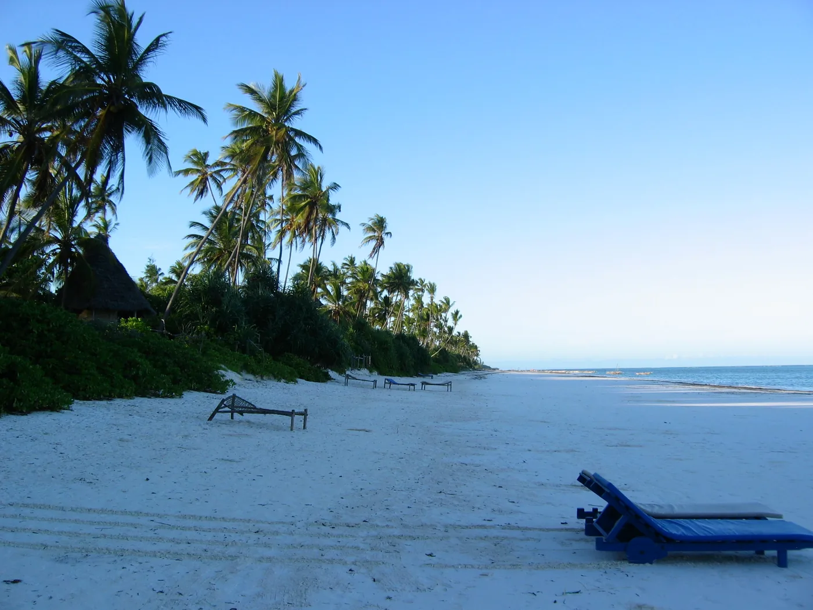
Ort: Ostküste von Unguja (Sansibar), Tansania
Aufnahmedatum laut Quelle: 2006-12
Beschreibung Pristine Beach East Zanzibar und Kategorien Zanzibar Island, Beaches of Zanzibar und Tourism in Tanzania stimmen überein; kein einzelner Strandname belegt.
Original: Zanzibar east coast pristine beach.JPG · Geprüfte Beschreibungsrevision
Urheber: Bakersville · CC BY-SA 4.0
Attribution: Zanzibar east coast pristine beach.JPG — Bakersville, CC BY-SA 4.0 (https://creativecommons.org/licenses/by-sa/4.0), via Wikimedia Commons (https://commons.wikimedia.org/wiki/File:Zanzibar_east_coast_pristine_beach.JPG). Auf längstens 1400 Pixel verkleinert, nach WebP (Qualität 82) konvertiert; EXIF entfernt. Kein inhaltlicher Eingriff und kein gespeicherter Beschnitt.
Motivabweichung / Grenze: Strandlandschaft statt Stadt-und-Meer-Ansicht.
Lokaler Quellennachweis
F08 · Außenansicht eines Ghacem-Zementwerks mit Produktionssilo.
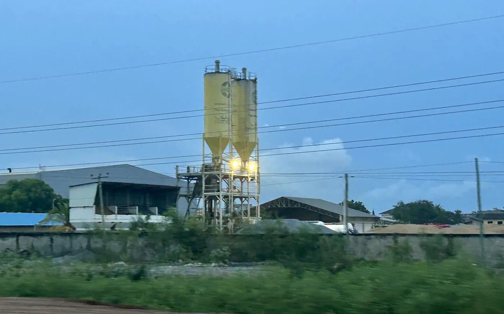
Ort: Ghacem-Anlage im Großraum Accra/Tema, Ghana
Aufnahmedatum laut Quelle: 2026-06-06 18:15:00
Autorbeschreibung Ghacem manufacturing plant in Accra; Koordinaten 5.666156, -0.061758 liegen im Großraum Accra/Tema.
Original: Ghacem Manufacturing Plant.jpg · Geprüfte Beschreibungsrevision
Urheber: Gideon Fiadowu Norkplim · CC BY 4.0
Attribution: Ghacem Manufacturing Plant.jpg — Gideon Fiadowu Norkplim, CC BY 4.0 (https://creativecommons.org/licenses/by/4.0), via Wikimedia Commons (https://commons.wikimedia.org/wiki/File:Ghacem_Manufacturing_Plant.jpg). Auf längstens 1400 Pixel verkleinert, nach WebP (Qualität 82) konvertiert; EXIF entfernt. Kein inhaltlicher Eingriff und kein gespeicherter Beschnitt.
Motivabweichung / Grenze: Außenansicht eines Industriebetriebs statt Arbeit im Inneren.
Lokaler Quellennachweis
F09 · Balme Library auf dem Campus der University of Ghana.
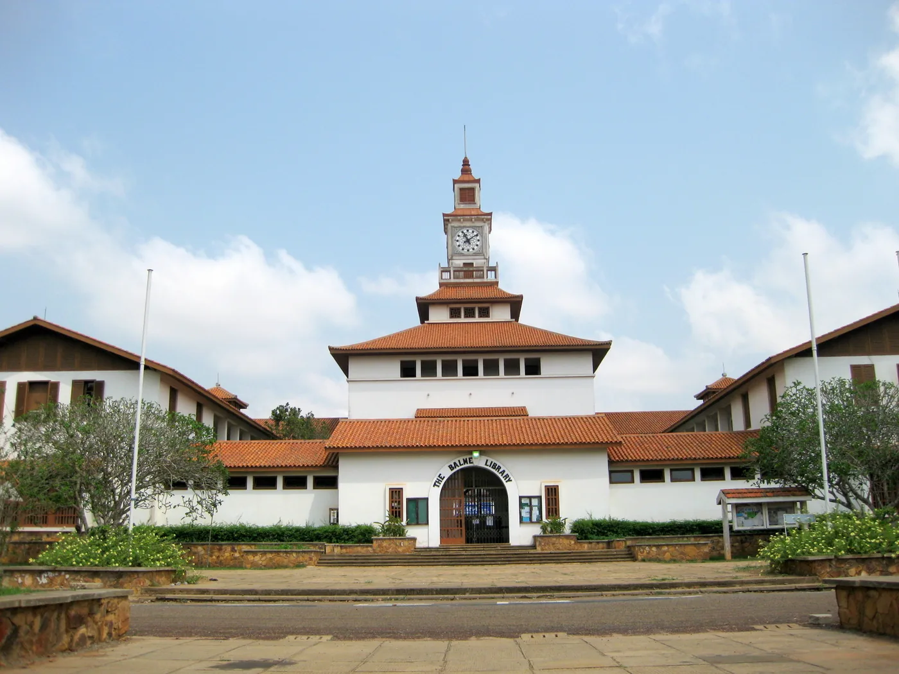
Ort: Legon, Accra, Ghana
Aufnahmedatum laut Quelle: 2010-01-31 07:16:02
Autorbeschreibung benennt die Bibliothek und die University of Ghana in Accra; Kategorie Balme Library bestätigt das Bauwerk. Der Tippfehler Badme in der Quelle wird als Balme wiedergegeben.
Original: Balme Library of University of Ghana, Accra, Ghana.jpg · Geprüfte Beschreibungsrevision
Urheber: Rjruiziii · CC BY-SA 3.0
Attribution: Balme Library of University of Ghana, Accra, Ghana.jpg — Rjruiziii, CC BY-SA 3.0 (https://creativecommons.org/licenses/by-sa/3.0), via Wikimedia Commons (https://commons.wikimedia.org/wiki/File:Balme_Library_of_University_of_Ghana,_Accra,_Ghana.jpg). Auf längstens 1400 Pixel verkleinert, nach WebP (Qualität 82) konvertiert; EXIF entfernt. Kein inhaltlicher Eingriff und kein gespeicherter Beschnitt.
Motivabweichung / Grenze: Keine Abweichung vom geplanten Motiv.
Lokaler Quellennachweis
F10 · Straßenszene mit Geschäften und Passanten am Makola-Markt.
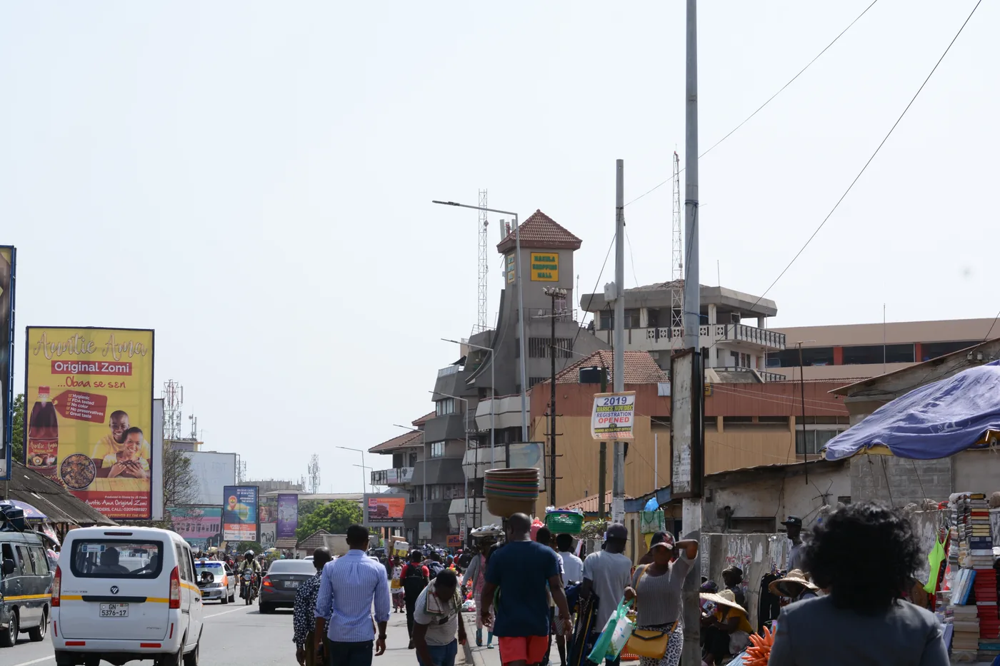
Ort: Makola-Markt, Accra Central, Ghana
Aufnahmedatum laut Quelle: 2019-03-12 15:17:01
Autorbeschreibung nennt Makola als Markt in Accra Central; die Straßenansicht zeigt Geschäfte und städtischen Alltag.
Original: MAKOLA.jpg · Geprüfte Beschreibungsrevision
Urheber: Amuzujoe · CC BY-SA 4.0
Attribution: MAKOLA.jpg — Amuzujoe, CC BY-SA 4.0 (https://creativecommons.org/licenses/by-sa/4.0), via Wikimedia Commons (https://commons.wikimedia.org/wiki/File:MAKOLA.jpg). Auf längstens 1400 Pixel verkleinert, nach WebP (Qualität 82) konvertiert; EXIF entfernt. Kein inhaltlicher Eingriff und kein gespeicherter Beschnitt.
Motivabweichung / Grenze: Keine Abweichung vom geplanten Motiv.
Lokaler Quellennachweis
F11 · Kakaofrüchte am Baum in einem ghanaischen Anbaugebiet.
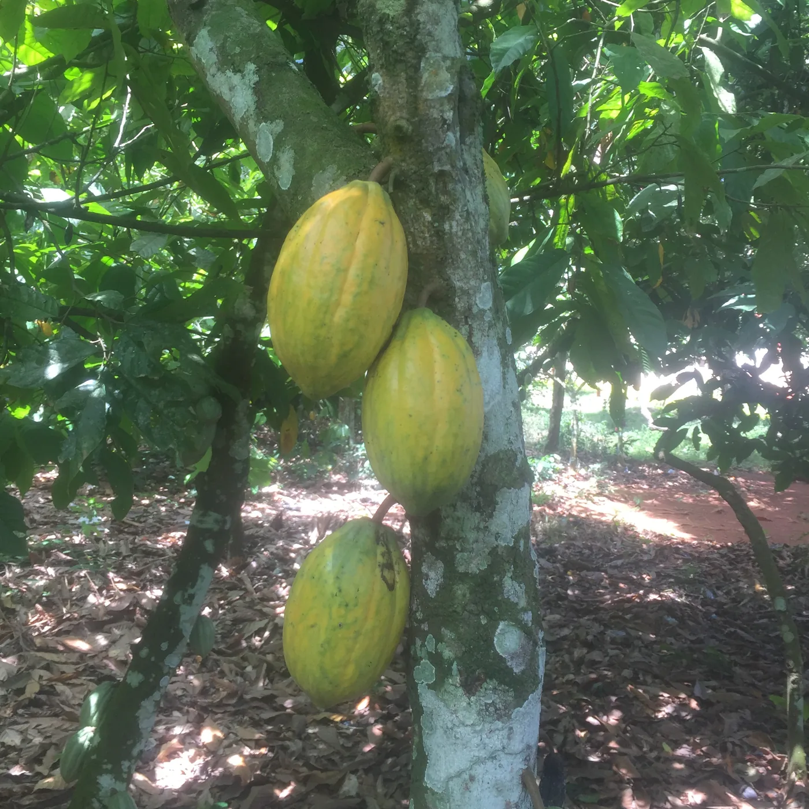
Ort: Ostghana (6.599547 N, 0.881836 W), Ghana
Aufnahmedatum laut Quelle: 2020-11-04 11:19:36
Die Autorbeschreibung nennt Kakao als Nutzpflanze in Ghana; Aufnahmekoordinaten 6.599547, -0.881836 liegen im östlichen Ghana. Kategorien Theobroma cacao (fruit) und Cacao plantations bestätigen Frucht und Anbaukontext.
Original: Cocoa 002.jpg · Geprüfte Beschreibungsrevision
Urheber: Otuo-Akyampong Boakye · CC BY-SA 4.0
Attribution: Cocoa 002.jpg — Otuo-Akyampong Boakye, CC BY-SA 4.0 (https://creativecommons.org/licenses/by-sa/4.0), via Wikimedia Commons (https://commons.wikimedia.org/wiki/File:Cocoa_002.jpg). Auf längstens 1400 Pixel verkleinert, nach WebP (Qualität 82) konvertiert; EXIF entfernt. Kein inhaltlicher Eingriff und kein gespeicherter Beschnitt.
Motivabweichung / Grenze: Keine Abweichung vom geplanten Motiv.
Lokaler Quellennachweis
F12 · Abgeerntetes Hirsefeld in der Trockenzeit.
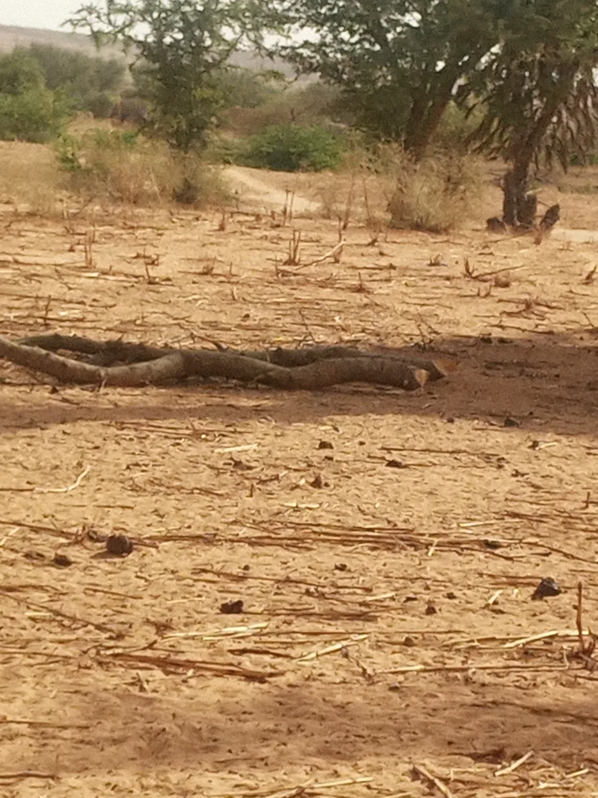
Ort: Sahelzone, westlicher Niger (13.95419 N, 1.65624 E)
Aufnahmedatum laut Quelle: 2025-03-14 09:39:16
Die Beschreibung nennt abgeerntete Hirsefelder, die bis zur Regenzeit brachliegen; Kategorie Agriculture in Niger und Koordinaten verorten die Aufnahme im westlichen Niger.
Original: Un champs de mil pendant la saison sèche.jpg · Geprüfte Beschreibungsrevision
Urheber: Tawaye · CC BY-SA 4.0
Attribution: Un champs de mil pendant la saison sèche.jpg — Tawaye, CC BY-SA 4.0 (https://creativecommons.org/licenses/by-sa/4.0), via Wikimedia Commons (https://commons.wikimedia.org/wiki/File:Un_champs_de_mil_pendant_la_saison_s%C3%A8che.jpg). Auf längstens 1400 Pixel verkleinert, nach WebP (Qualität 82) konvertiert; EXIF entfernt. Kein inhaltlicher Eingriff und kein gespeicherter Beschnitt.
Motivabweichung / Grenze: Trockenzeit nach der Ernte statt laufender Feldarbeit; das Foto allein belegt keine Ernteausfälle.
Lokaler Quellennachweis
F13 · Skyline von Nairobi, vom Stadtteil Upper Hill aus gesehen.
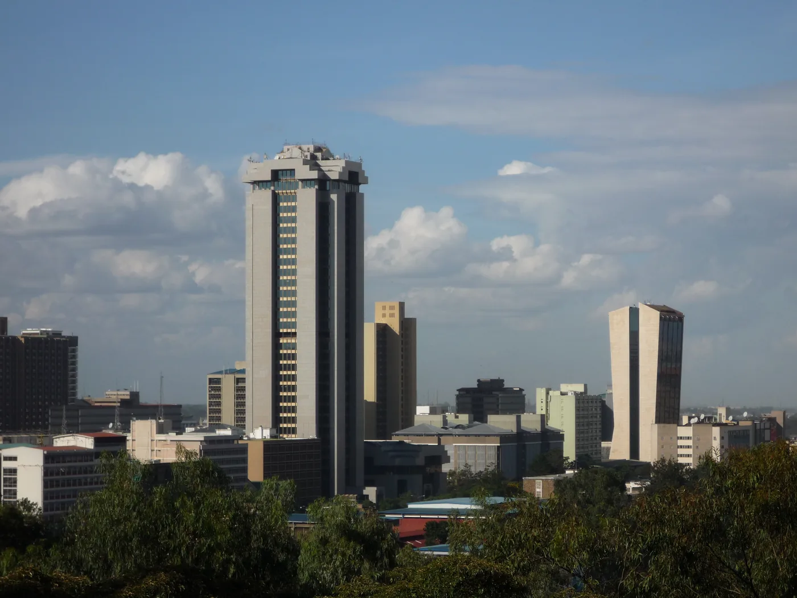
Ort: Upper Hill, Nairobi, Kenia
Aufnahmedatum laut Quelle: 19 April 2008 (according to Exif data)
Autorbeschreibung Nairobi skyline from Upperhill und Koordinaten -1.296500, 36.817778 verorten die Aufnahme in Nairobi.
Original: Nairobi skyline P1000019.jpg · Geprüfte Beschreibungsrevision
Urheber: Lmwangi · CC BY-SA 3.0
Attribution: Nairobi skyline P1000019.jpg — Lmwangi, CC BY-SA 3.0 (https://creativecommons.org/licenses/by-sa/3.0), via Wikimedia Commons (https://commons.wikimedia.org/wiki/File:Nairobi_skyline_P1000019.jpg). Auf längstens 1400 Pixel verkleinert, nach WebP (Qualität 82) konvertiert; EXIF entfernt. Kein inhaltlicher Eingriff und kein gespeicherter Beschnitt.
Motivabweichung / Grenze: Stadtansicht von 2008 als Ausgangspunkt für das Thema Stadtentwicklung; ein einzelnes Foto belegt kein Bevölkerungswachstum.
Lokaler Quellennachweis
F14 · Gebäude und Anlage eines kakaoverarbeitenden Betriebs.
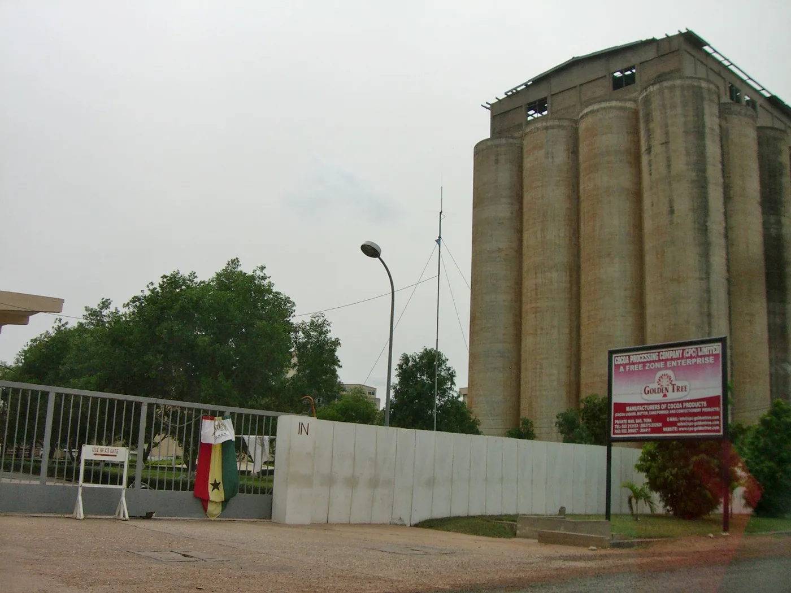
Ort: Industriegebiet Tema, Ghana
Aufnahmedatum laut Quelle: 2007-05-13
Autorbeschreibung und ursprünglicher Flickr-Titel nennen die Cocoa Processing Company, den Kakaosilo und Tema in Ghana. Commons-Kategorien Buildings in Tema und Agricultural buildings in Ghana bestätigen den Ort; Flickr-Lizenzprüfung durch Commons dokumentiert. Keine genauen Koordinaten in der ausgewählten Quelle.
Original: Cocoa Processing Company Building (Cocoa Silo).jpg · Geprüfte Beschreibungsrevision
Urheber: Hiroo Yamagata · CC BY-SA 2.0
Attribution: Cocoa Processing Company Building (Cocoa Silo).jpg — Hiroo Yamagata, CC BY-SA 2.0 (https://creativecommons.org/licenses/by-sa/2.0), via Wikimedia Commons (https://commons.wikimedia.org/wiki/File:Cocoa_Processing_Company_Building_(Cocoa_Silo).jpg). Auf längstens 1400 Pixel verkleinert, nach WebP (Qualität 82) konvertiert; EXIF entfernt. Kein inhaltlicher Eingriff und kein gespeicherter Beschnitt.
Motivabweichung / Grenze: Außenansicht statt Einblick in den Verarbeitungsprozess.
Lokaler Quellennachweis
F15 · Spiegelfelder des solarthermischen Kraftwerks Noor I/II.
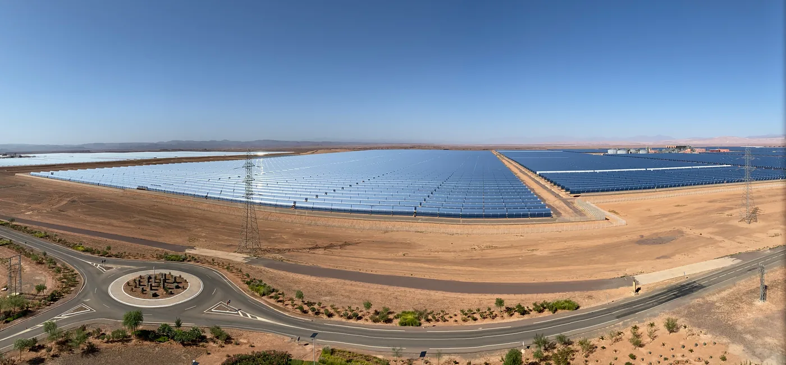
Ort: Noor-Solarkomplex bei Ouarzazate, Marokko
Aufnahmedatum laut Quelle: 2019-10-17 11:13
Autorbeschreibung Noor 1 and 2 – Ouarzazate Solar Power Station, Kategorie und Koordinaten 31.029002, -6.856492 stimmen überein.
Original: Noor 1 and 2 - Ouarzazate Solar Power Station (48962353822).jpg · Geprüfte Beschreibungsrevision
Urheber: Richard Allaway · CC BY 2.0
Attribution: Noor 1 and 2 - Ouarzazate Solar Power Station (48962353822).jpg — Richard Allaway, CC BY 2.0 (https://creativecommons.org/licenses/by/2.0), via Wikimedia Commons (https://commons.wikimedia.org/wiki/File:Noor_1_and_2_-_Ouarzazate_Solar_Power_Station_(48962353822).jpg). Auf längstens 1400 Pixel verkleinert, nach WebP (Qualität 82) konvertiert; EXIF entfernt. Kein inhaltlicher Eingriff und kein gespeicherter Beschnitt.
Motivabweichung / Grenze: Solarthermische Anlage mit Spiegeln statt Photovoltaik; ein großes Kraftwerk statt einer kleinen lokalen Anlage.
Lokaler Quellennachweis
F16 · Wassertank auf einem Turm
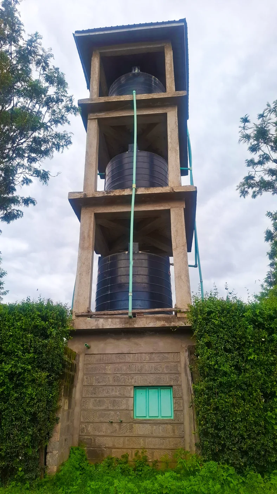
Ort: Kajiado County, Kenia
Aufnahmedatum laut Quelle: 2026-06-19
Die Commons-Autorbeschreibung nennt einen Wassertankturm in Ongara Rongai, Kajiado County, Kenia; die Kategorien nennen Wasserversorgung in Kenia. Die Ortsangabe wird auf den belegten County begrenzt.
Original: Water tank tower.jpg · Geprüfte Beschreibungsrevision
Urheber: Queen Asali · CC BY-SA 4.0
Attribution: Queen Asali: Water tank tower.jpg, CC BY-SA 4.0 (https://creativecommons.org/licenses/by-sa/4.0), Quelle Wikimedia Commons; lokal verkleinert, in WebP umgewandelt, EXIF entfernt, kein Beschnitt.
Motivabweichung / Grenze: Wasserspeicher als Beispiel für Versorgung; kein Beleg für Wassermangel oder Zugang aller Haushalte.
Lokaler Quellennachweis
F17 · Krankenhausgebäude in Butaro
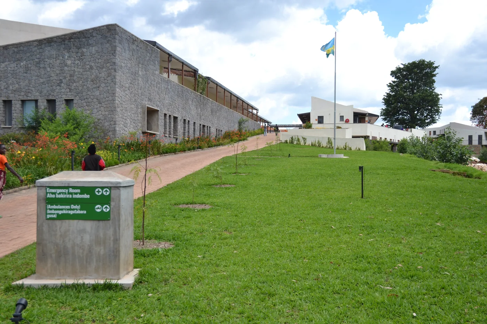
Ort: Butaro, Distrikt Burera, Ruanda
Aufnahmedatum laut Quelle: 2011-10-11
Commons-Beschreibung: New hospital in Butaro, Burera District, Rwanda. Flickr-Original und Kategorie nennen Butaro Hospital. Keine Herkunft oder Qualifikation von Personen aus dem Aussehen abgeleitet.
Original: Butaro Hospital.jpg · Geprüfte Beschreibungsrevision
Urheber: François Terrier · CC BY 2.0
Attribution: François Terrier: Butaro Hospital.jpg, CC BY 2.0 (https://creativecommons.org/licenses/by/2.0), Quelle Wikimedia Commons; lokal verkleinert, in WebP umgewandelt, EXIF entfernt, kein Beschnitt.
Motivabweichung / Grenze: Historische Außenaufnahme von 2011; kein Beleg für aktuelle Versorgungsqualität, allgemeine Zugänglichkeit oder finanzielle Unabhängigkeit.
Lokaler Quellennachweis
A3-B1 · Dichte Bebauung in Makoko aus der Luft
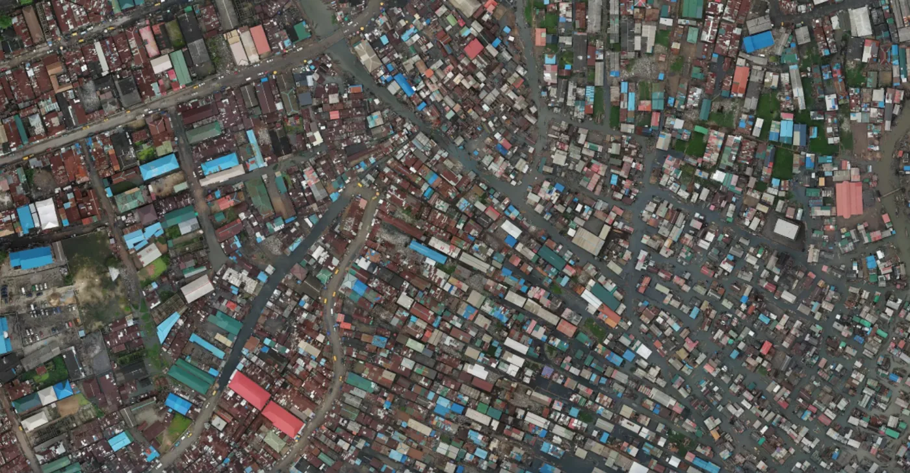
Ort: Makoko, Lagos, Nigeria
Aufnahmedatum laut Quelle: 2019-11-13
Die Autorbeschreibung nennt Makoko in Lagos; die geografischen Kategorien bestätigen Makoko und Luftaufnahme von Lagos.
Original: Aerial view of Makoko Slum in Lagos Nigeria.png · Geprüfte Beschreibungsrevision
Urheber: Kateregga1 · CC BY-SA 4.0
Attribution: Kateregga1: Aerial view of Makoko Slum in Lagos Nigeria.png, CC BY-SA 4.0 (https://creativecommons.org/licenses/by-sa/4.0), Quelle Wikimedia Commons; lokal verkleinert, in WebP umgewandelt, EXIF entfernt, kein Beschnitt.
Motivabweichung / Grenze: Aufnahme 2019; Vergleich mit Lagos Island 2016 zeigt unterschiedliche Orte und Zeitpunkte, keinen zeitlichen Entwicklungsverlauf. Keine Einkommen oder Herkunft aus dem Bild ableiten. Die Aufnahme zeigt Dächer und Straßen; sie belegt weder Haushaltseinkommen noch einen bestimmten Versorgungsgrad.
Lokaler Quellennachweis
A3-B2 · Stoffhandel im Balogun-Markt
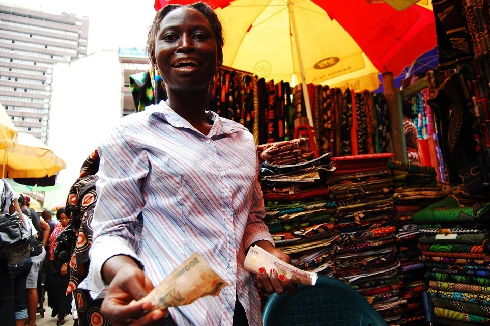
Ort: Balogun-Markt, Lagos, Nigeria
Aufnahmedatum laut Quelle: 2007-07-13 11:06
Beschreibung des Flickr-Fotos: Ankara alley of Balogun Market, Lagos, Nigeria; Commons-Kategorie bestätigt Märkte in Lagos.
Original: 2007 Balogun Market Lagos Nigeria 9395578408.jpg · Geprüfte Beschreibungsrevision
Urheber: Seattle Globalist · CC BY-SA 2.0
Attribution: Seattle Globalist: 2007 Balogun Market Lagos Nigeria 9395578408.jpg, CC BY-SA 2.0 (https://creativecommons.org/licenses/by-sa/2.0), Quelle Wikimedia Commons; lokal verkleinert, in WebP umgewandelt, EXIF entfernt, kein Beschnitt.
Motivabweichung / Grenze: Historische Aufnahme 2007. Dritte Alltagsperspektive und belegter Handelsort, keine statistische Mittelschicht oder Einkommensangabe. Das Original hat 963 × 640 Pixel und wurde nicht künstlich vergrößert.
Lokaler Quellennachweis
F18 · Lehmhäuser mit Strohdächern
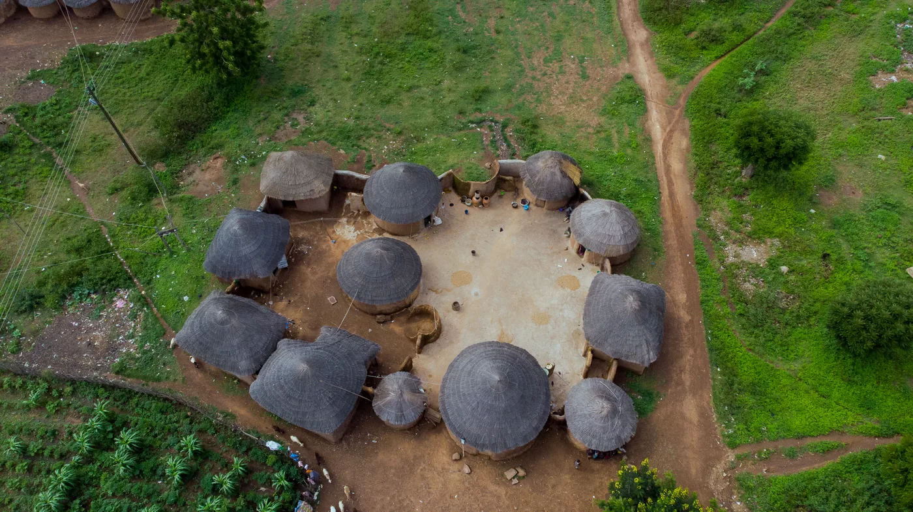
Ort: Raum Tamale, Nordghana
Aufnahmedatum laut Quelle: 2022-08-13 14:43:22
Die Autorbeschreibung nennt ein Wohngehöft aus Lehm mit Strohdächern; Ghana ist ausdrücklich im Länderfeld angegeben. Koordinaten 9.483314 N, 1.097087 W und Kategorie Tamale belegen den Raum. Kein genauer Dorfname behauptet.
Original: Rural Home 05.jpg · Geprüfte Beschreibungsrevision
Urheber: Salifu Wumpini Hussein · CC BY-SA 4.0
Sichtbarer Inhalt: Lehmwände, Strohdächer, Hof, Wege sowie Stromleitungen und Strommasten.
Personendarstellung: Übersichtsaufnahme; keine erkennbaren Nahporträts. Keine Einkommens- oder Armutszuordnung.
Attribution: Salifu Wumpini Hussein: Rural Home 05.jpg, CC BY-SA 4.0 (https://creativecommons.org/licenses/by-sa/4.0), Quelle Wikimedia Commons; verkleinert und in WebP umgewandelt, EXIF entfernt, kein Beschnitt.
Motivabweichung / Grenze: Sichtbar: Lehmwände, Strohdächer, Hof und Wege; außerdem Leitungen. Bauweise belegt weder Armut noch fehlenden Strom oder unzureichende Versorgung. Keine erkennbaren Nahporträts; keine Einkommenszuordnung.
Lokaler Quellennachweis
F19 · Tagebau bei Phalaborwa
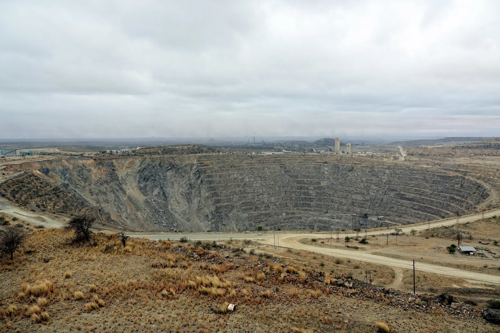
Ort: Palabora-Mine bei Phalaborwa, Südafrika
Aufnahmedatum laut Quelle: 2019-10-10 10:33:04
Autorbeschreibung, Dateiname, Kategorie Palabora Mine und südafrikanische Ortskategorien nennen den Tagebau.
Original: Palabora-Open-Pit-Mine-2019.jpg · Geprüfte Beschreibungsrevision
Urheber: Bjørn Christian Tørrissen · CC BY-SA 4.0
Sichtbarer Inhalt: Großer offener Tagebau mit gestuften Terrassen und Wegen.
Personendarstellung: Landschaftsübersicht ohne hervorgehobene Personen; keine Aussagen zu individuellen Arbeitsbedingungen.
Attribution: Bjørn Christian Tørrissen: Palabora-Open-Pit-Mine-2019.jpg, CC BY-SA 4.0 (https://creativecommons.org/licenses/by-sa/4.0), Quelle Wikimedia Commons; verkleinert und in WebP umgewandelt, EXIF entfernt, kein Beschnitt.
Motivabweichung / Grenze: Aufnahme 2019; sichtbar sind Grube und Terrassen. Kein Beleg aktueller Fördermengen, Arbeitsbedingungen, Ausbeutung oder Umweltfolgen. Keine Rangfolge gegenüber Landwirtschaft oder Dienstleistungen.
Lokaler Quellennachweis
F20 · Klassenraum mit Holztischen und Stühlen
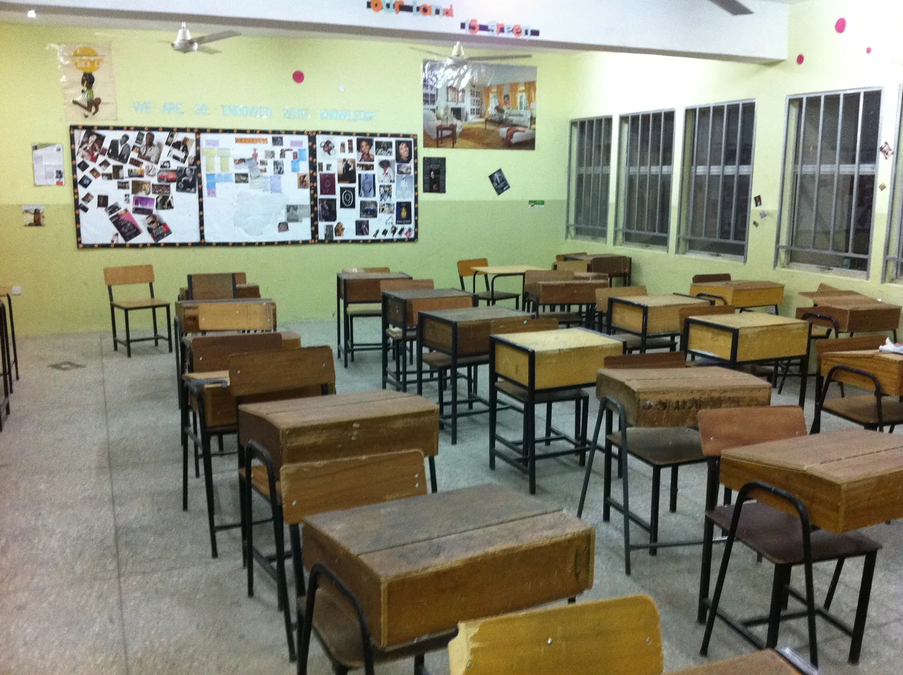
Ort: Nigeria; genauer Schulstandort nicht angegeben
Aufnahmedatum laut Quelle: 2011-01-08 20:47:10
Das explizite Länderfeld NG im Originalwikitext und die Kategorien Schools in Nigeria / Nigeria photographs taken on 2011-01-08 verorten das Foto auf Landesebene. Ein konkreter Schulname oder Ort ist nicht belegt.
Original: Empty Classroom.JPG · Geprüfte Beschreibungsrevision
Urheber: Danslafrique · CC BY-SA 4.0
Sichtbarer Inhalt: Leerer Klassenraum mit gebrauchten Holz-/Metalltischen und Stühlen, Fenstern, Ventilatoren, Wandtafeln und Lernmaterial.
Personendarstellung: Keine Schülerinnen, Schüler oder anderen Personen im Raum.
Attribution: Danslafrique: Empty Classroom.JPG, CC BY-SA 4.0 (https://creativecommons.org/licenses/by-sa/4.0), Quelle Wikimedia Commons; verkleinert und in WebP umgewandelt, EXIF entfernt, kein Beschnitt.
Motivabweichung / Grenze: Sichtbar: gebrauchte Holz-/Metallmöbel, Fenster, Wandtafeln und Lernmaterial. Menschenleerer Raum. Einfache sichtbare Möblierung ist kein Beleg fehlender Bildung, allgemeiner Lernqualität oder Ausstattung der ganzen Schule. Genauer Schulstandort bleibt offen.
Lokaler Quellennachweis
F21 · Wassertransport in einem Kanister
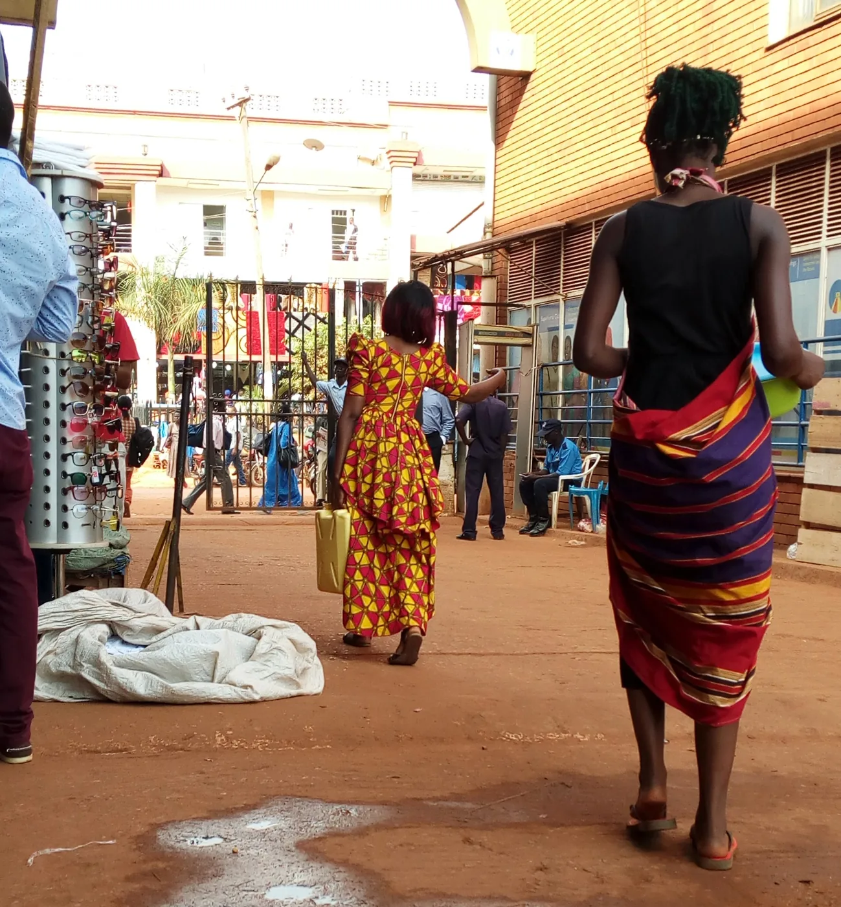
Ort: Uganda; genauer Aufnahmeort nicht angegeben
Aufnahmedatum laut Quelle: 2017-10-18 08:36:05
Länderangabe Uganda im Wikitext sowie Kategorien Water supply in Uganda / Women of Uganda und Dateititel Woman carrying jerrycan Of water. Keine Stadt oder Weglänge ergänzt.
Original: Woman carrying jerrycan Of water.jpg · Geprüfte Beschreibungsrevision
Urheber: Mstephen247 · CC BY-SA 4.0
Sichtbarer Inhalt: Menschen auf einem Weg zwischen Marktständen; eine erwachsene Person trägt einen Kanister. Der Quellentitel benennt Wasser.
Personendarstellung: Hauptpersonen von hinten in einer alltäglichen Arbeitsszene; keine Nahaufnahme leidender Menschen, keine Einkommenszuordnung.
Attribution: Mstephen247: Woman carrying jerrycan Of water.jpg, CC BY-SA 4.0 (https://creativecommons.org/licenses/by-sa/4.0), Quelle Wikimedia Commons; verkleinert und in WebP umgewandelt, EXIF entfernt, kein Beschnitt.
Motivabweichung / Grenze: Sichtbar: Kanister wird getragen; Hauptpersonen von hinten in einer Alltagsszene. Der Titel benennt Wasser. Keine Behauptung über Menge, Weglänge, Wasserqualität, Wasserknappheit oder Einkommen; keine Nahaufnahme leidender Menschen.
Lokaler Quellennachweis
F22 · Gesundheitsstation Dankh Sene
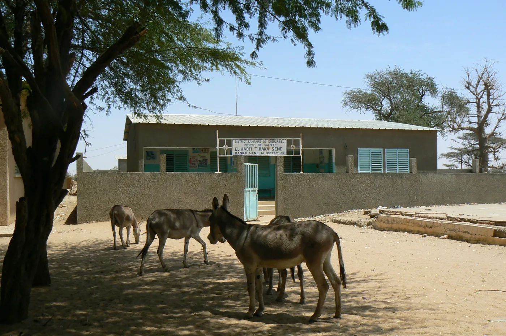
Ort: Dankh Sene, Gesundheitsdistrikt Diourbel, Senegal
Aufnahmedatum laut Quelle: 2014-03-29 09:25
Der Flickr-/Commons-Originaltitel nennt Dankh Sene health post in Diourbel District, Senegal. Auf dem Gebäudeschild steht District sanitaire de Diourbel / Poste de santé / Dankh Sene. Flickr-Koordinaten werden nicht als punktgenau geprüft ausgegeben.
Original: Dankh Sene health post in Diourbel District, Senegal (14153373970).jpg · Geprüfte Beschreibungsrevision
Urheber: Nathaly Herrel / President’s Malaria Initiative · Public domain
Lizenzgrundlage: PD-USGov-HHS: amtliches Werk des US Department of Health and Human Services; Commons-/Flickr-Prüfung als United States Government Work. Gesicherte Lizenzvorlage
Sichtbarer Inhalt: Kleine Gesundheitsstation von außen, beschriftetes Gebäudeschild, Zaun und Tiere vor dem Gelände.
Personendarstellung: Keine Personen, Patientinnen, Patienten, Verletzungen oder leidenden Kinder sichtbar.
Attribution: Nathaly Herrel / President’s Malaria Initiative: Dankh Sene health post in Diourbel District, Senegal (14153373970).jpg, Public domain (https://commons.wikimedia.org/wiki/Template:PD-USGov-HHS), Quelle Wikimedia Commons; verkleinert und in WebP umgewandelt, EXIF entfernt, kein Beschnitt.
Motivabweichung / Grenze: Menschenleere Außenaufnahme einer kleinen Gesundheitsstation (2014). Sie belegt keine Innenausstattung, Behandlungsqualität oder landesweite Klinikdichte. Statt einer unbelegten Innenraumszene wird die verlässlich verortete Station verwendet. Keine Patienten, Verletzungen oder leidenden Kinder.
Lokaler Quellennachweis
Die Bilder behalten ihre jeweils angegebene Lizenz. Unterrichts- und Geräteabnahme werden getrennt dokumentiert.


.jpg){kind=link}


.jpg){kind=link}


.jpg){kind=link}
.jpg){kind=link}


.jpg){kind=link}